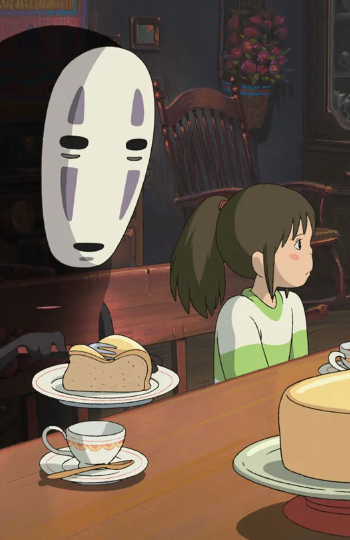
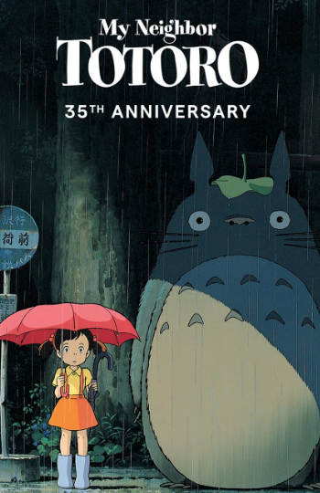

Spirited Away
Director: Hayao Miyazaki
The fanciful adventures of a ten-year-old girl named Chihiro, who discovers a secret world when she and her family get lost and venture through a hillside tunnel. When her parents undergo a mysterious transformation, Chihiro must fend for herself as she encounters strange spirits, assorted creatures and a grumpy sorceress who seeks to prevent her from returning to the human world.


Recommendations

Howl's Moving Castle
When an unconfident young woman is cursed with an old body by a spiteful witch, her only chance of breaking the spell lies with a self-indulgent yet insecure young wizard and his companions in his legged, walking castle.

My Neighbor Totoro
When two girls move to the country to be near their ailing mother, they have adventures with the wondrous forest spirits who live nearby.
Princess Mononoke
On a journey to find the cure for a Tatarigami's curse, Ashitaka finds himself in the middle of a war between the forest gods and Tatara, a mining colony. In this quest he also meets San, the Mononoke Hime.